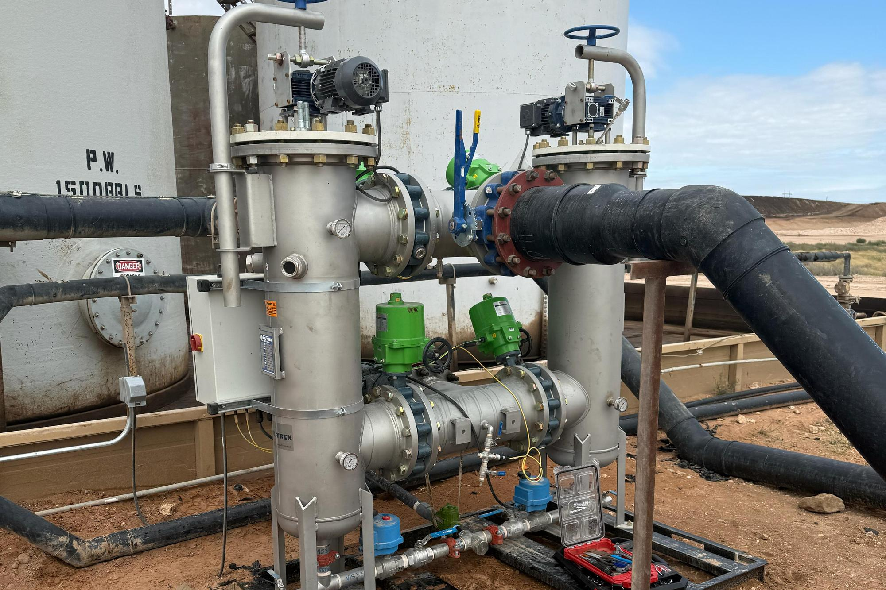

Self-cleaning strainers that pull solids out of produced water automatically — no backwash, no consumables, no downtime. Built for SWD inlets and midstream water handling.
They show up as emulsion you have to chemically treat, sludge you pay a vacuum truck to haul off, oil that leaves with the water instead of going down the sales line, and an injection well that takes less every month.
IP Filtration pulls the solids out at the inlet — automatically, continuously, and without a single consumable to replace. Clean water goes to the well, and the oil stays sellable.
Operators put an IPF strainer on the front end of their disposal and recycling systems for a few simple reasons.
Solids removed before they reach your pump or injection well. It does not backwash, so it keeps flowing clean while it cleans itself.
Rotating SS316 brushes scrub the basket mechanically. Nothing to buy, dispose of, or send a crew to swap.
Cuts tank cleanout frequency, improves oil/water separation, and reduces chemical treatment.
From the flagship automated strainer to high-flow depth filters made in Texas.
The 98 Series flagship. 50–500µm, 30,000–50,000 bbl/day, fully automated and SCADA-ready.
1/2 Combo, 3/3 Combo, and 11-Round Torpedo vessels for high-loading produced water.
Coleman depth filters — up to 25x the life of standard socks and 5x pleated surface filters.
Texas-made, 9"–72" lengths, up to 6" diameter, in five media options.
Cut tank cleanouts and iron sulfide, improve oil/water separation, recover more oil.
Drop proppants, fines, scale, and corrosion products before recycling.
Keep damaging solids off your H-pump to extend life and cut maintenance.
Screen incoming flows to stop buildup and reduce pump-outs.
We deliver and install. You run it on your water. Keep it or we pick it up.
Request your trial unit →